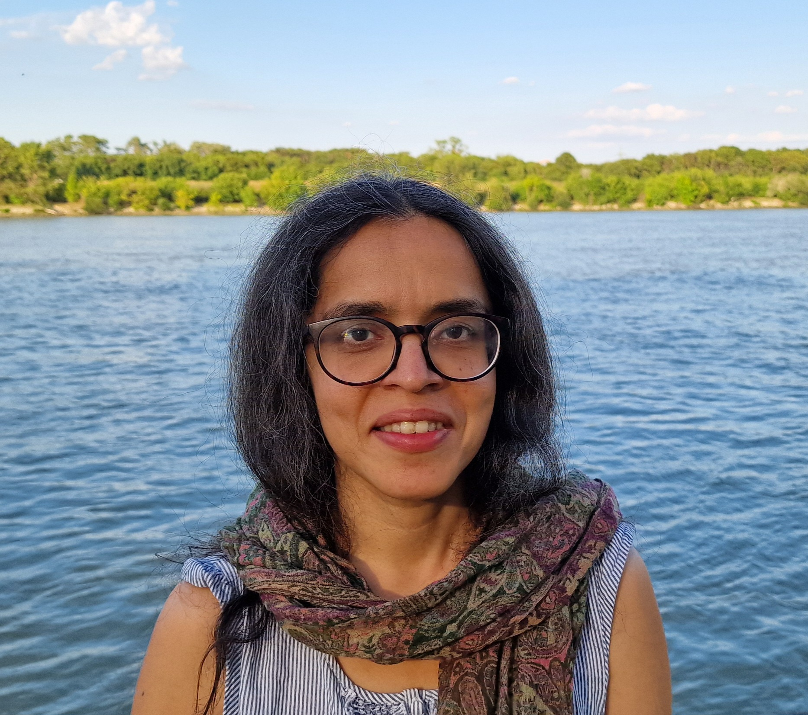

People
Himani Sachdevahimani.sachdeva@univie.ac.at |
I use mathematical models to understand how genetic variation is maintained in natural populations, how populations respond to selection, and the longer-term outcomes (local adaptation, speciation, extinction) that arise from the interplay of evolutionary and demographic processes over different spatio-temporal scales. I studied physics during my undergrad and obtained a PhD in statistical physics from TIFR Mumbai. Motivated by a broader interest in biodiversity and the processes that maintain it, I then switched to theoretical evolutionary genetics for my postdoc at IST Austria, followed by a senior postdoc position in the Mathematics and Biosciences Group at the University of Vienna. I am currently an assistant professor with a joint appointment in the Faculty of Life Sciences and the Faculty of Mathematics at the University of Vienna. I am also part of the SFB consortium on polygenic adaptation which consists of experimental evolution, population genomics and theoretical genetics groups in and around Vienna. |
Juan Li
juan.li@univie.ac.at postdoc under SFB |
I am broadly interested in speciation and polygenic adaptation. I began my PhD by studying the genetic basis of behavioral isolation in Drosophila melanogaster. This complex trait raised diverse questions in evolutionary biology and motivated my subsequent postdoctoral research, such as identifying genetic incompatibilities in natural populations and the role of additive and non-additive effects (epistasis and dominance) during adaptation. Under the SFB project, I am investigating how population structure affects the genetic architecture underlying polygenic traits, both at equilibrium and during adaptation. |
Parvathy Surendranadhparvathy.surendranadh@univie.ac.at postdoc |
|
Francisco Iglesias Santosfrancisco.iglesias.santos@univie.ac.at PhD candidate |